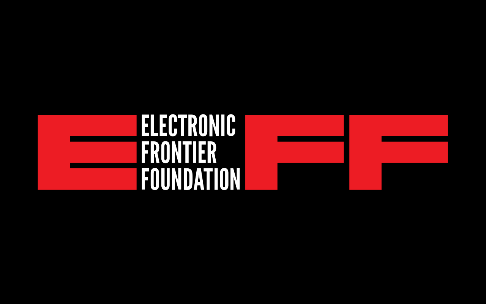
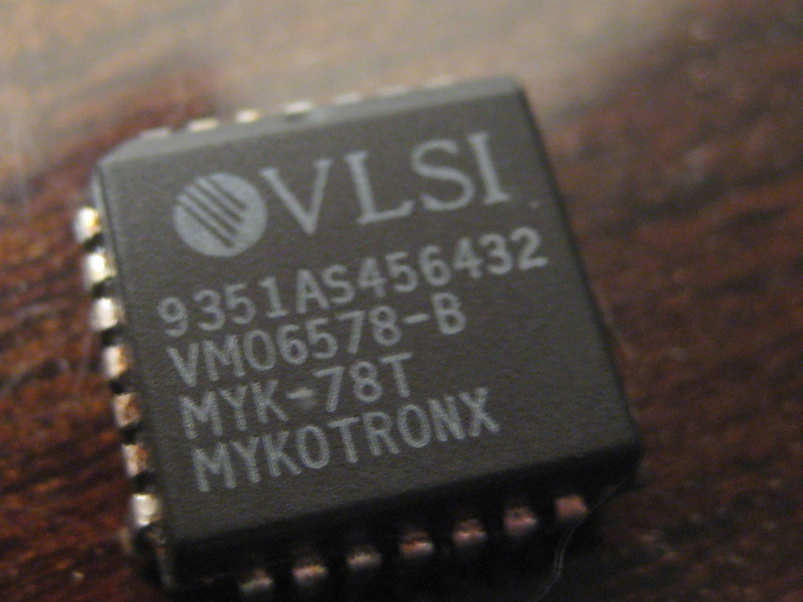
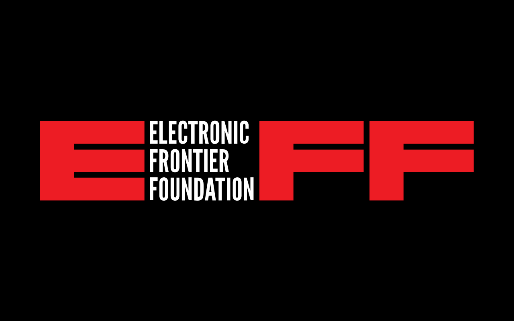
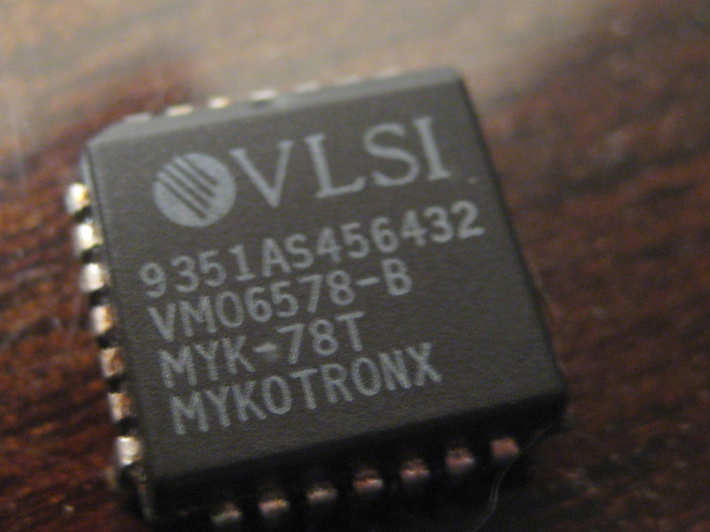
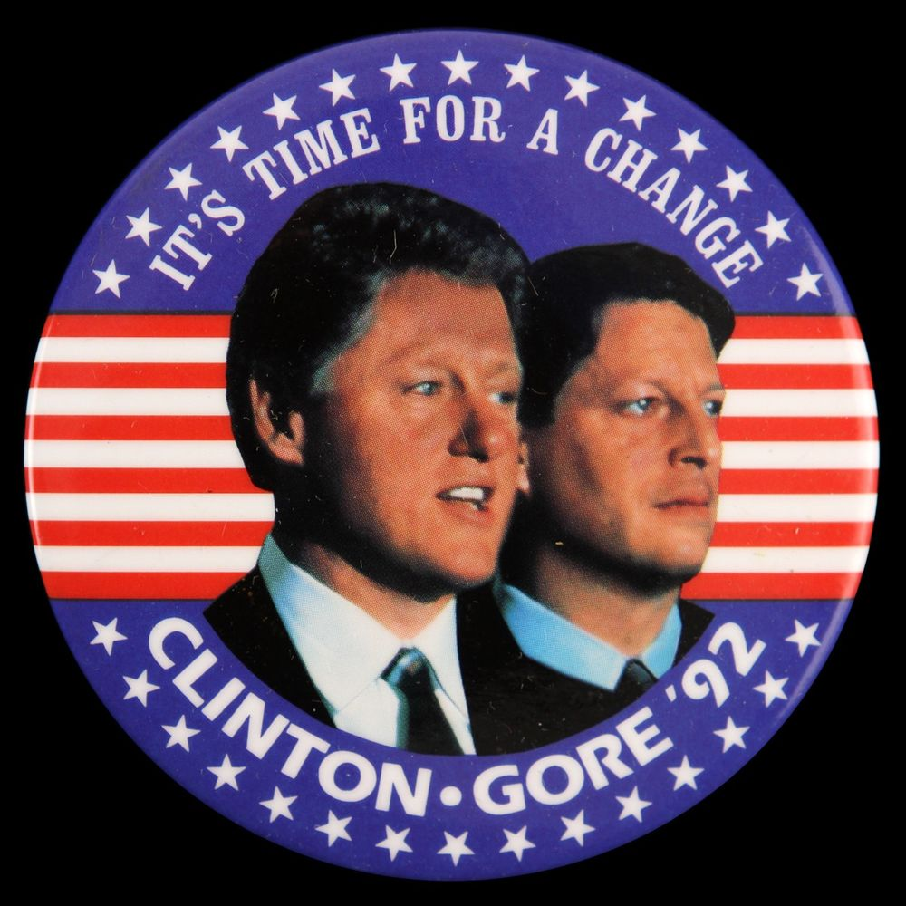
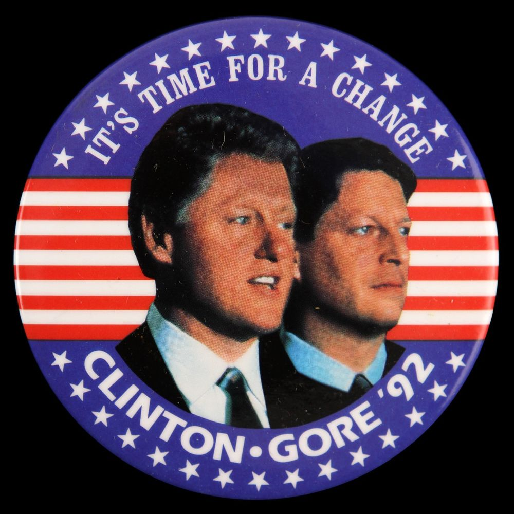

The U.S. Government
We’re going to deviate quickly from the story just to mention ‘military-grade’ encryption. This is encryption that many types of organisations and brands claim to be using it for their products or services. Military-grade isn’t even a term used by militaries across the world; organisations have taken and continuously use ‘military-grade’ in an attempt to let consumers know that their data is protected. This is done by using an encryption standard that the military uses for some tasks; however, this doesn’t mean that the security is cutting-edge as the military and government agencies will have robust and secret encryption standards. We at deCryptMe want to clear your head so that you aren’t being misled by service and product providers. By no means are the standards inadequate, as many will use some form of AES which we will get onto near the end of this section and feature as part of your future learning. But, it’s still important to have this key information.
Now going back to the story; here’s where things went pear-shaped, or book-shaped if you will. Bruce Schneier, the Harvard lecturer who came up earlier, published ‘Applied Cryptography’. This was a book that discussed the intricacies of cryptography as well as standards which are banned from export under the munitions list. The same algorithms that couldn’t be published online were not published in a book. An engineer working with Bruce named Phil Karn approached the U.S. State Department for a ‘commodity jurisdiction’, which allows for the book to be exported globally. It was granted as there were no set restrictions on shipping books from the U.S., after this success Phil attempted to take a few pages from the book and place them on a floppy disk which he then applied for a commodity jurisdiction. This time it was rejected, and due to a freedom of information request made many years later we now know that the U.S. State Department approached the NSA to ask whether this should go through, and un-bewilderingly it was denied. As the cryptography standard and discussion was now in electronic form, it could be blocked on these grounds.
 Controversy ensued as a book with a written algorithm could be sent outside of the U.S. but a floppy disk with the same data could not. Yes, it’s not just you scratching your head at this sentiment. In return, Phil Karn sued the U.S. State Department for violating the first amendment right. He saw that if the book was protected under the first amendment, then so should a floppy disk which has the same data. When Phil Zimmermann (the creator of PGP) caught wind of this lawsuit, he also wrote his PGP code into a book; going as far to ensure that the book was quickly scannable to assist in the spread of PGP. Phil Zimmermann requested a commodity jurisdiction too; however, the U.S. State Department caught wind of this intention and didn’t accept or deny the request, leaving it in limbo. This didn’t stop the publisher of the book from shipping the book worldwide. The security community got together and started printing small parts of cryptography standard code onto T-shirts. This meant that if a foreign national were to even look at the T-Shirt, there would be a violation of the Arms Export Control Act. The cypherpunks were determined to beat the U.S. Government.

The EFF or Electronic Frontier Foundation (mentioned before) assisted in multiple court cases against the U.S. Government (some now being referred to as Bernstein v United States), with the first case put forwards in 1995. Dan Bernstein is a famous cypherpunk who wanted to review and discuss cryptography, working on making it more durable through these talks and projects. EFF sent their best cypherpunks and lawyers to work with Bernstein and support him.
Fast forward a year later and a lecturer from Case Western University, Peter Junger, joined the cause with his lawsuit. He joined as he found it ridiculous that he was unable to teach individual students at his university about cryptography as they were from outside of the U.S. Therefore it was illegal for them to be admitted onto the course. A key fact to take away from all of these lawsuits is not that the government has a problem with Pretty Good Privacy, but with privacy in and of itself. This reflects solemnly as the U.S. was trying to muzzle cryptography advancements by the public and organisations in any way they legally could. Unable to teach about cryptography or post his code online for others to learn from and improve, this was unacceptable for many cypherpunks, and this served as the third major case against the government.
These three concurrent cases against the U.S. Government’s laws raged on, with Peter Junger’s case in Cleveland, Bernstein’s and the EFF’s lawsuit in California, and finally Phil Karn’s case in Washington DC. The government was being dealt blow after blow as the pressure mounting from both these cypherpunks and organisations such as banks demanding more robust standardised encryption. The U.S. Government at this time was blocking everyone from using encryption over 40 bits on the internet. Apart from the previously mentioned Clipper chip.

AT&T had released a mobile phone for $1400 which digitised the phone call before encrypting it with DES. The U.S. Government had raced out to contact AT&T to offer its solution instead. The Clipper chip encrypted phone calls at 80 bits which were the main selling point behind utilising these chips in phones; however, they still did not sell well. The Clipper chip featured a backdoor which meant that the U.S. Government held all of the keys in escrow as each Clipper chip made had the private key retained. The government finally allowed the public to use more robust encryption, at the price that the encryption would be worthless when used against the U.S. The public wanted encryption free of the government’s grasp, and still looked at PGP for these tools, hence why the Clipper chip tanked. Shortly after its introduction in 1993, the Clipper chip was declared dead in 1996 after the failure of adoption by the public and phone manufacturers.
Controversy ensued as a book with a written algorithm could be sent outside of the U.S. but a floppy disk with the same data could not. Yes, it’s not just you scratching your head at this sentiment. In return, Phil Karn sued the U.S. State Department for violating the first amendment right. He saw that if the book was protected under the first amendment, then so should a floppy disk which has the same data. When Phil Zimmermann (the creator of PGP) caught wind of this lawsuit, he also wrote his PGP code into a book; going as far to ensure that the book was quickly scannable to assist in the spread of PGP. Phil Zimmermann requested a commodity jurisdiction too; however, the U.S. State Department caught wind of this intention and didn’t accept or deny the request, leaving it in limbo. This didn’t stop the publisher of the book from shipping the book worldwide. The security community got together and started printing small parts of cryptography standard code onto T-shirts. This meant that if a foreign national were to even look at the T-Shirt, there would be a violation of the Arms Export Control Act. The cypherpunks were determined to beat the U.S. Government.

The EFF or Electronic Frontier Foundation (mentioned before) assisted in multiple court cases against the U.S. Government (some now being referred to as Bernstein v United States), with the first case put forwards in 1995. Dan Bernstein is a famous cypherpunk who wanted to review and discuss cryptography, working on making it more durable through these talks and projects. EFF sent their best cypherpunks and lawyers to work with Bernstein and support him.
Fast forward a year later and a lecturer from Case Western University, Peter Junger, joined the cause with his lawsuit. He joined as he found it ridiculous that he was unable to teach individual students at his university about cryptography as they were from outside of the U.S. Therefore it was illegal for them to be admitted onto the course. A key fact to take away from all of these lawsuits is not that the government has a problem with Pretty Good Privacy, but with privacy in and of itself. This reflects solemnly as the U.S. was trying to muzzle cryptography advancements by the public and organisations in any way they legally could. Unable to teach about cryptography or post his code online for others to learn from and improve, this was unacceptable for many cypherpunks, and this served as the third major case against the government.
These three concurrent cases against the U.S. Government’s laws raged on, with Peter Junger’s case in Cleveland, Bernstein’s and the EFF’s lawsuit in California, and finally Phil Karn’s case in Washington DC. The government was being dealt blow after blow as the pressure mounting from both these cypherpunks and organisations such as banks demanding more robust standardised encryption. The U.S. Government at this time was blocking everyone from using encryption over 40 bits on the internet. Apart from the previously mentioned Clipper chip.

AT&T had released a mobile phone for $1400 which digitised the phone call before encrypting it with DES. The U.S. Government had raced out to contact AT&T to offer its solution instead. The Clipper chip encrypted phone calls at 80 bits which were the main selling point behind utilising these chips in phones; however, they still did not sell well. The Clipper chip featured a backdoor which meant that the U.S. Government held all of the keys in escrow as each Clipper chip made had the private key retained. The government finally allowed the public to use more robust encryption, at the price that the encryption would be worthless when used against the U.S. The public wanted encryption free of the government’s grasp, and still looked at PGP for these tools, hence why the Clipper chip tanked. Shortly after its introduction in 1993, the Clipper chip was declared dead in 1996 after the failure of adoption by the public and phone manufacturers.
 Meet Matt Blaze, a current chair of Computer Science and Law at Georgetown University, and even on the TOR board, who reviewed the cryptographic strength of the Cipher chips. His research confirmed what many cypherpunks hypothesised; you couldn’t have secure encryption which already had a backdoor made. Weakening the key for the ‘good’ law enforcement (dependant on many factors, hence the quotation marks) means that the ‘bad’ criminals have also been catered for. The criminals can gather these keys from the backdoor. These revelations by Matt aided the Clipper chip project in its failure. This came as two lawsuits had succeeded, in both the District Court and the Court of Appeals. The cypherpunk’s demands were being met, and it was becoming apparent that while this war was raging, a winner had already been decided.

American history time! To give you context about the political environment in America at the time we have included this section so you can understand the internal struggles of the U.S. during this period. In 1992 Bill Clinton was elected President of the United States (POTUS), Bill chose Al-Gore to be his vice-president as he liked his family values and global impact. Bill Clinton was computer illiterate and didn’t get involved with the internet during its infancy. Still, in 1996 when the government was losing multiple court cases, Bill turned to Al-Gore for his advice. Al-Gore had a technological background, but the main thing is that he wanted to be president after Bill. Al-Gore lobbied for change around encryption as he wanted to impress both the general public and the techies at Silicon Valley. So on November the 15th 1996, Bill Clinton signed an Executive Order (Federal law/ruleset issued by POTUS), EO 13026, which finally removed encryption from the munitions list. Encryption and subjects related to it were now completely legal to produce and manage the distribution of encryption, right?
Written by HarryIsSecured
Meet Matt Blaze, a current chair of Computer Science and Law at Georgetown University, and even on the TOR board, who reviewed the cryptographic strength of the Cipher chips. His research confirmed what many cypherpunks hypothesised; you couldn’t have secure encryption which already had a backdoor made. Weakening the key for the ‘good’ law enforcement (dependant on many factors, hence the quotation marks) means that the ‘bad’ criminals have also been catered for. The criminals can gather these keys from the backdoor. These revelations by Matt aided the Clipper chip project in its failure. This came as two lawsuits had succeeded, in both the District Court and the Court of Appeals. The cypherpunk’s demands were being met, and it was becoming apparent that while this war was raging, a winner had already been decided.

American history time! To give you context about the political environment in America at the time we have included this section so you can understand the internal struggles of the U.S. during this period. In 1992 Bill Clinton was elected President of the United States (POTUS), Bill chose Al-Gore to be his vice-president as he liked his family values and global impact. Bill Clinton was computer illiterate and didn’t get involved with the internet during its infancy. Still, in 1996 when the government was losing multiple court cases, Bill turned to Al-Gore for his advice. Al-Gore had a technological background, but the main thing is that he wanted to be president after Bill. Al-Gore lobbied for change around encryption as he wanted to impress both the general public and the techies at Silicon Valley. So on November the 15th 1996, Bill Clinton signed an Executive Order (Federal law/ruleset issued by POTUS), EO 13026, which finally removed encryption from the munitions list. Encryption and subjects related to it were now completely legal to produce and manage the distribution of encryption, right?
Written by HarryIsSecured